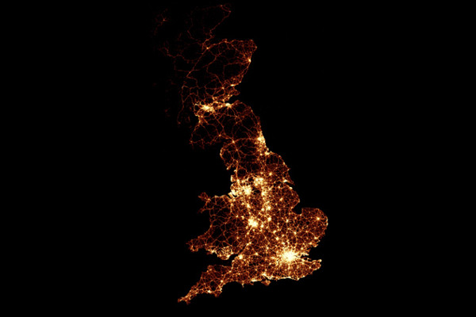
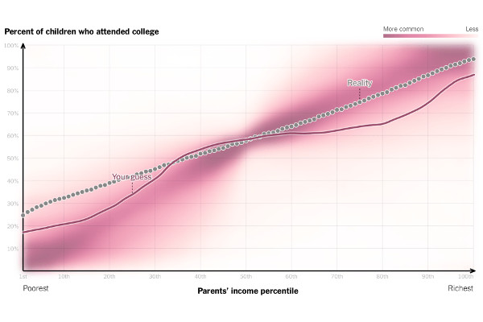
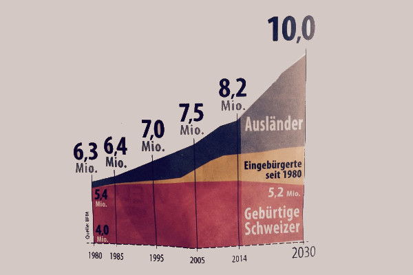

Global Hunger Index (GHI)
| Country |
1990 |
2000 |
2014 |
| Central African Republic |
51.9 |
51.4 |
46.9 |
| Chad |
65 |
52 |
46.4 |
| Haiti |
52.1 |
42.8 |
37.3 |
| Madagascar |
44.8 |
44.1 |
36.3 |
| Sierra Leone |
58.8 |
53.5 |
38.9 |
| East Timor |
- |
- |
40.7 |
| Zambia |
47 |
50.9 |
41.1 |
Good & Bad Visualizations

UK Traffic Accidents (Good)
As part of their series on road accidents, BBC News mapped every recorded death on the road in Great Britain, from 1999 to 2010. That's 2,396,750 road crashes.
They used only yellow as a color while the background is black. Every death is a small yellow dot.
Through this minimalistic approach the visualisation is very effectiv. Nothing distracts from the main story, i.e., where most deaths occure.
The map might be improved a bit with the indication of the country borders.
The general problem with that kind of visualizations is, that it basicly shows a population density map, i.e., the map would be even more useful if it included information about traffic density – this would highlight particularly safe as well as dangerous stretches of the road map.
Source: http://www.bbc.co.uk/news/uk-15975724

How Family Income predicts children's College Chances (Good)
The Upshot/NYT asked readers to draw a line that plotted family income against the percent of children who attended college. That means your individual guess, reality, and what other people thought the correlation looked like.
They used a simple linechart with and plotted with purple the density of guesses of other people.
It challenges the reader to think about the relationship between income and college attendance.
The usage of the density is a very nice addon to visualize a big amount of lines.
I would a more neutral kind of color. The graph also begs the question if it not to difficult to understand for layman, i.e., a different graph might be better.
Source: http://www.nytimes.com/interactive/2015/05/28/upshot/you-draw-it-how-family-income-affects-childrens-college-chances.html
How Baby Boomers Describe Themselves (Bad)
Beyond.com conducted a survey with 6,361 job seekers and veteran HR professionals form April 12 - May 9, 2013. With the data they created a graph of how babyboomers describe themselfs.
They create a kind of pie chart inside a person and fill it with colors.
The first problem is that the percentages don't add up to 100, i.e., 40% + 61% + 22% + 78% + 42% = 243%
Furthermore, the color allocation isn’t representative of the %.
A better graph would be to use a barchart.
Source: http://viz.wtf/post/59697293967/hes-243-baby-boomer

Immigration into Switzerland (Bad)
During the Swiss election campagne of 2015 the conservative Swiss People's Party used a missleading ad in the newspapers.
The graph supposidly shows the "predicted" immigration into Switzerland from 1980 up to 2030. The red color shows Swiss inhabitents, the yellow one nationalized Swiss and the blue color foreigners.
The first problem is, that the bottom of the graphic is omitted, i.e., the scale begins at 4 million. Or in other words: 4 million Swiss are simply tilted from the illustration.
Furthermore, the amount of foreigners in the year 1980 is set to nearly zero. However, the real amount according to the federal institiute of statistics was 15 percent. This deception increases the percived growth by quit a bit.
In order to improve the graph the correct as well as all data should be shown.
Source: http://www.20min.ch/
Previous
Next